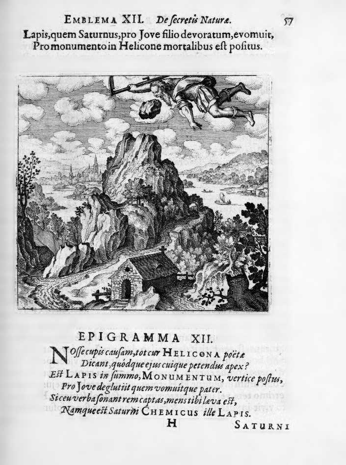

The composition closely parallels Emblem XI: the figure of Latona appears again in the process of being whitened, while books and scrolls are visibly torn or discarded. The emphasis shifts slightly to the completed act of purification — Latona is lighter or whiter than in the previous emblem, suggesting progress in the albedo. The torn books lie definitively abandoned on the ground.
Make Latona white and tear up the books.
Maier continues the argument of Emblem XI, now emphasizing the bewildering variety and obscurity of alchemical writings as the reason books must be abandoned. He argues that the sheer volume of contradictory texts drives seekers to despair, and that the only path forward is direct engagement with the material. The discourse develops the Latona allegory further: she is an impure body of mixed Sol and Luna that must be found in a humble place, immersed in dung where she becomes white lead, from which red lead originates. Maier presents this as the beginning and end of the opus — the albedo whitening that initiates the final reddening toward the rubedo.
Emblem XII bears the motto: "Make Latona white and tear up the books."
Maier continues the argument of Emblem XI, now emphasizing the bewildering variety and obscurity of alchemical writings as the reason books must be abandoned. He argues that the sheer volume of contradictory texts drives seekers to despair, and that the only path forward is direct engagement with the material. The discourse develops the Latona allegory further: she is an impure body of mixed Sol and Luna that must be found in a humble place, immersed in dung where she becomes white lead, from which red lead originates.
De Jong's source-critical analysis identifies the textual traditions Maier draws upon for this emblem.
The discourse draws on alchemical sources: Aurora Consurgens, Rosarium Philosophorum. The discourse draws on biblical sources: Solomonic / Biblical Wisdom Tradition (Proverbs). The discourse draws on classical sources: Ovid, Metamorphoses X.560-704.
Hereward Tilton: Tilton connects discourse 12's retelling of the Chronos/Saturn myth (devouring children, tricked by a stone) to the broader Saturnian framework of Maier's alchemy. The difficult ascent of Helicon to see the stone parallels the alchemical ladder of the Scala Arcis Philosophicae.
H.M.E. de Jong: De Jong traces the source of the dropsical ore metaphor to the Clangor Buccinae and identifies the underlying process as the repeated washing and purification of impure philosophical mercury. She connects the Naaman baptism story to the albedo purification sequence running through Emblems XI-XIII.
Substance: Aqua Regia
Tilton connects discourse 12's retelling of the Chronos/Saturn myth (devouring children, tricked by a stone) to the broader Saturnian framework of Maier's alchemy. The difficult ascent of Helicon to see the stone parallels the alchemical ladder of the Scala Arcis Philosophicae.
Citation: Ch. III, p. 96 (cf. Examen Fucorum)
De Jong traces the source of the dropsical ore metaphor to the Clangor Buccinae and identifies the underlying process as the repeated washing and purification of impure philosophical mercury. She connects the Naaman baptism story to the albedo purification sequence running through Emblems XI-XIII.